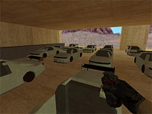
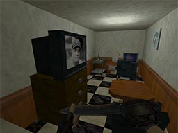
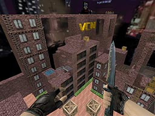
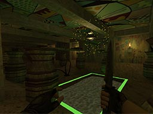
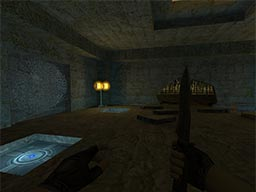

-
前言
我将要介绍的是一款叫做VHE的软件，VHE这个软件我是在初中的时候接触到的。我是名电子游戏玩家，游戏和音乐、乒乓球等一样，是我的一个兴趣爱好，同时我非常热爱并关注游戏行业。在初中时，我接触和玩耍最多的游戏，叫做CS1.6（反恐精英1.6），这款游戏给我了非常大的影响。
在那时，我和几位网上认识的朋友联机玩耍，当我以为CS1.6的玩法只有枪战时，我却发现一些有趣的“地图”（地图指的是游戏场景，CS地图是后缀名为bsp的文件，每张地图是独立的），在这些地图中，我可以和其他玩家一起开赛车竞速，可以与朋友一起互帮互助闯关（类似于电视节目“智勇大冲关”的玩法，玩家需要躲避障碍并到达终点），还可以探索鬼屋，玩解谜密室（CS1.6继承了游戏《半条命》的许多机制，而《半条命》是带有一定解谜成分的游戏，因此在CS1.6地图里实现解谜并不麻烦），甚至可以飞檐走壁在城市中玩跑酷，
由此这个游戏的趣味大大提高了，而我也开始思考：这些地图是怎么做出来的？我能不能也做一张出来？   这是我的好友“VCN”制作的赛车地图 VCN制作的解谜密室地图 VCN制作的跑酷地图 
  VCN制作的闯关地图
*图中观众的无缝贴图是我帮他做的呢（笑我的另一个好友“可怕先生Sun”制作的解谜地图
*他的场景设计能力比我强得多可怕先生Sun的解谜地图（同一张 从此我便开始制作CS地图了，从一个小白，到被其他高手称赞，我一路上经历了许多许多，也学到了许多许多...这一段人生经历已经成为了我珍贵的回忆之一。接下来，我就将带你了解，CS地图制作的秘密。
-
VHE简介
VHE(Valve Hammer Editor)，中文名V社锤子编辑器，常被称作CS地图编辑器，是一款《半条命》、《CS》等游戏的地图的编辑工具。
VHE能够进行建模、贴图应用与调整、游戏事件的设计。
在今天看来，VHE的功能已经落后了，与各大游戏引擎的开发工具相比，VHE逊色太多，但VHE工具包小巧而便携，可以作为便携简易的3D建模工具（有一次话剧表演我就是利用VHE制作了3D场景，从而渲染出图像用在话剧的PPT中）。
-
Valve公司简介
Valve是Valve Software（维尔福软件公司）的简称，1996年成立于华盛顿州西雅图市，是一家专门开发电子游戏的公司，代表作品有半条命,反恐精英,求生之路,DOTA2等。
在我的印象中，Valve（常称作V社）是个神奇的公司。Valve是个游戏公司，所以他们当然开发了一些游戏。Valve公司的游戏不多，但个个对我来说都是经典。按理来说，我们定义游戏“好不好玩”主要从这几个方面入手：
- 可玩性：如游戏的战斗系统是否有趣，游戏有没有什么创新的玩法
- 剧情：游戏的剧情是否有趣，是否发人深思、引起人的共鸣
- 代入感：游戏画面是否真实（对写实类游戏），游戏流程是否合理，剧情是否合乎常理，配乐是否合适
- 其他
而我自认为Valve公司的许多游戏都做到了如上几点，这些游戏是不可多得的佳作，但奈何V社的游戏在国内不温不火，虽有一批铁杆粉丝，但大众认知实在太少。
-
Half-Life游戏简介
Half-Life，中文名半条命，是由Valve（维尔福）软件开发，雪乐山公司最早于1998年出版的一个科幻类型的第一人称射击电子游戏系列。*实际上半条命这个译名是错误翻译。Half-Life本意是“半衰期”，但由于半条命这个译名在国内传播广泛，最终Valve公司公开承认了这个译名。
半条命是一款第一人称射击游戏，在那时，FPS游戏给人的普遍印象是：开场给你一把枪，然后一路打打杀杀，无非是这样。而半条命的出现改变这一认知。它在游戏中加入了剧情，加入了与场景、人物的互动，开创了FPS游戏的新格局，FPS游戏从此之后再也不是单纯的血腥杀戮，它的发售引起了整个业界的轰动！